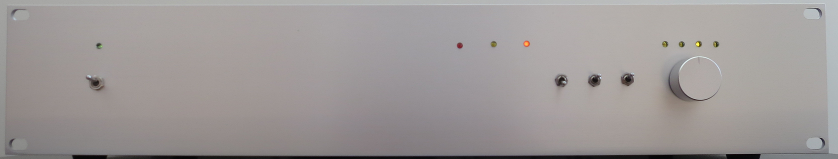
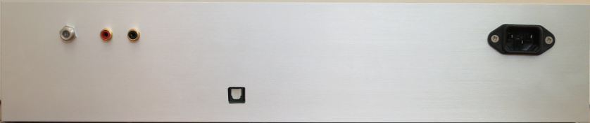
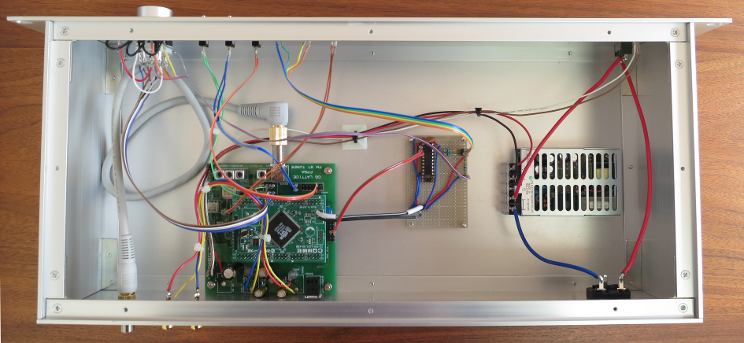

FPGA FM tuner
表面実装済みのFPGA
FM tuner基板を御頒布いただき、部品実装、シャーシ加工などを行ないました。
ライブ録音など貴重な音源の多い NHK-FM のリスニング、エアチェックに活躍しています。
- DDT誌の付属基板を使っています。
- 電源はスイッチング電源内蔵としました。
- 電源、ADC オバーの LED は丸ピンＩＣソケット経由でシャーシのフロントパネルに付けています。
- ディップスイッチも丸ピンＩＣソケット経由でフロントパネルのトグルスイッチ、
ロータリスイッチに接続しました。
- 受信周波数は3極、4段のロータリスイッチで選択できるようにしました。
1極余るので、LED 4個を接続して、選択したメモリーの番号を示すようにしました。
- ステレオ、AFC の LED は FPGA 基板上に実装されており、外に取り出せないので、
FPGA のピン配置、プログラムを少し変更して AUX Connector #2 の P7, P8 に出力するようにしました。
バッファーIC経由でフロントパネルにの LED に接続しています。また、基板上の LED は常時消灯になるようにしています。
- ステレオ、AFC、メモリー表示の LED 用電源は FPGA 基板の電源コネクタ用パターンにピンヘッダを付けて使用しています。
- 強制モノラル、受信帯域幅 (396kHz, 252kHz) はフロントパネルのトグルスイッチで切り替えられるようにしました。
- AFC は常時 ON で固定にしています。
- もう一つのトグルスイッチは AUX Connector #1 の P3, P4 に接続しました。FPGA のプログラムを変更し、DAC の MUTE on/off 切替をできるようにしています。
- ピンヘッダと LED、スイッチなどの接続には2ピン基板用ピンソケットを使用しています。
- リビングのシステムに組み込むので、シャーシは少々奢ってタカチのYER型ラックケース
YER8820S を使用しました。
- ロータリースイッチのノブもシャーシに合うようにアルミ製のもの (Linkman 25X15BPS)を使用しています。
- LED は4色使いましたが、赤一色のほうが落ち着いた雰囲気になってよかったかもしれないと思いました。



設計者の林さんから丁寧なコメントをいただきました。今後作成される方にとっ
て有用な情報と思いますので、ご了解を得ましてこちらで公開させて頂きます。
ケースに入れると、基板単体で実験、測定していた時に比べ、若干ノイズレベ
ルが上がることがあります。SW電源を内蔵した場合に、そのノイズの影響が出る
ことがあるのと、以下の2つのことが大きく影響する場合があります。
- SPDIFの光コネクタをケースのパネルに取り付ける場合、光トランスミッタ
のPLT133のピンのところ、最短でバイパスコン（100nF）を追加すること、
さらに直列にデカップリング用に22Ω程度の抵抗を入れることが重要です。
これを怠ると、PLT133への配線がノイズを撒き散らし、復調出力のノイズ
の増加を経験しました。信号ラインは普通のシールド線で配線します。
- アンテナのFコネクタを背面パネルに出す場合、FコネクタのGNDを背面パネ
ルから電気的に浮かせる方がノイズレベルを下げることができる場合が多
いです。これは、アンテナの接続を、背面パネルを経由せず、基板のFコネ
クタに直接接続することで試すことができます。FPGA基板の電源電流は結
構ノイジーなので、基板側とアンテナコネクタの2点でケースのGNDに接続
すると、そのノイジーな電源電流がアンテナに分流することが発生するよ
うです。ガラエポの基板の切れ端等で背面パネルのコネクタのGNDを絶縁す
ると効果があります。
電源ですが、秋月にある7-8種の電源（ACアダプタ）をとっかえひっかえ試しまし
たが、5.0V2.3Aの製品（600円）が、もっともノイズレベルが低く、このアダプタ
なら、リニアの実験用可変電源で測定した時のSNと同等のSNが測定できます。ケー
スに組み込む際、このアダプタをそのまま、両面テープでケースの中に貼り付け
ている方も多いです。